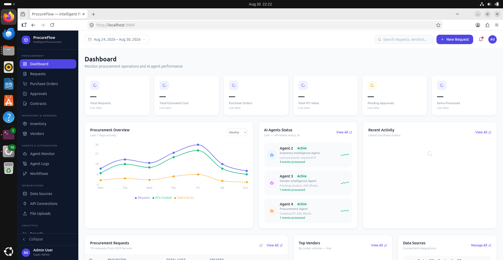

Agentic AI for Smart Procurement in Manufacturing Industries¶
Welcome to the centralized technical documentation for ProcureFlow, an autonomous multi-agent procurement platform designed specifically for manufacturing industries.

📌 Executive Summary¶
Manufacturing procurement involves document processing, inventory assessment, vendor selection, purchase-order generation, approvals, and risk analysis. Traditional manual and rule-based approaches render these activities time-consuming, siloed, and prone to costly delays.
ProcureFlow provides an intelligent, AI-driven procurement management solution using a modular multi-agent architecture. Specialized agents coordinate document intelligence (OCR), real-time inventory gap detection, multi-attribute vendor evaluation, automated purchase order generation, risk mitigation, and digital signatures—while retaining strict human oversight for financial approvals and contract execution.
👥 Project Information & Authorship¶
This project is submitted in partial fulfilment of the requirements of the University of Mumbai for the Degree of Bachelor of Engineering in Computer Engineering at Fr. Conceicao Rodrigues Institute of Technology (FCRIT), Vashi, Navi Mumbai (Academic Year 2026–2027).
👨💻 Project Group Members¶
| Roll No. / Exam Seat No. | Student Name | Role / Focus Areas |
|---|---|---|
| 1023262 | Kaustubh Waje | Multi-Agent Orchestration & Backend Infrastructure |
| 5023155 | Ishwari Shinde | Machine Learning, OCR & Document Intelligence |
| 5023139 | Dikshant Phulpagar | Database Engineering, Kafka Pipelines & Data Ingestion |
| 5023113 | Ashley Fernandes | Frontend Architecture (Next.js/React) & UI/UX Integration |
🎓 Project Supervisors & Mentors¶
- Internal Supervisor: Mrs. Nupur Gaikwad (Department of Computer Engineering, FCRIT Vashi), Mrs. Poonam Bari (Department of Information Technology, FCRIT Vashi)
- External Supervisor: Mr. Alok Chilka (Industry Specialist)
🚀 Key System Capabilities¶
-
:material-file-document-check:{ .lg .middle } Document Intelligence & OCR
Automated invoice, PO, and requisition ingestion using advanced Optical Character Recognition and LLM parsing to extract structured line items without manual data entry.
-
:material-warehouse:{ .lg .middle } Inventory Analysis & Shortage Detection
Monitors enterprise stock across multiple warehouse databases to identify real-time shortages against reorder thresholds and bills of materials.
-
:material-account-star:{ .lg .middle } Multi-Attribute Vendor Scoring
Dynamically ranks suppliers using historical delivery accuracy, quality ratings, unit pricing, compliance scores, and real-time reliability metrics.
-
:material-shield-alert:{ .lg .middle } Proactive Risk Assessment
Evaluates market price volatility, single-supplier concentration risk, lead-time variance, and geopolitical risk factors before placing orders.
-
:material-draw-pen:{ .lg .middle } Tiered Approvals & DocuSign Integration
Automated routing of requisitions based on enterprise financial authority thresholds, coupled with cryptographic digital signatures and DocuSign verification.
-
:material-robot:{ .lg .middle } RAG-Powered Vendor Chatbot
LLM-powered conversational interface that allows suppliers to query order status, clarify delivery schedules, and conduct automated RFP negotiations.
🧭 Documentation Navigation¶
Explore the technical chapters through the top navigation bar or the links below:
- System Architecture – Microservices topology, event-driven streaming with Kafka, and containerized deployment.
- Data Flow Diagrams (DFD) – Context (Level 0) and detailed (Level 1 & 2) data flow diagrams.
- Database & ER Diagram – Relational entity-relationship design, multi-tenant databases, and MinIO storage.
- Procurement Lifecycle – Step-by-step requisition, analysis, ordering, and audit tracking.
- Document Processing – Ingestion pipelines, OCR extraction, and 3-way matching.
- Approvals & Signatures – Governance matrices, digital signature verification, and DocuSign flows.
- AI Agents Ecosystem – Orchestration patterns, inter-agent messaging, and memory models.
- Agent Specifications – Deep dive into individual agent prompts, toolkits, inputs, and outputs.
- REST APIs – Microservices endpoints, payload schemas, and response formats.
- Configuration – Environment variables, LLM provider integration, and database credentials.
- Deployment – Docker Compose multi-container orchestrator setup and health checking.
- Testing – Comprehensive test case matrix, integration verification, and results.
- Troubleshooting & FAQs – Diagnostic guides, common port conflicts, and disaster recovery procedures.